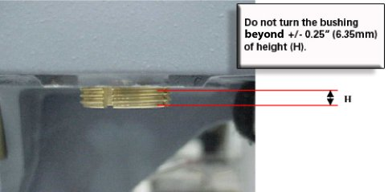

Illustration 6: Aligning Patient Transport Surface to Bridge

Illustration 6: Aligning Patient Transport Surface to Bridge
The casters should never be adjusted more than ±0.25 in. (6.35 mm), as shown below, from the 11 in. (279.4 mm) height.
Adjusting the high side down and the low side up by the same amount ensures the dock center will stay aligned with the Patient Transport docking mechanism.
Illustration 7: Caster Adjustment Warning
